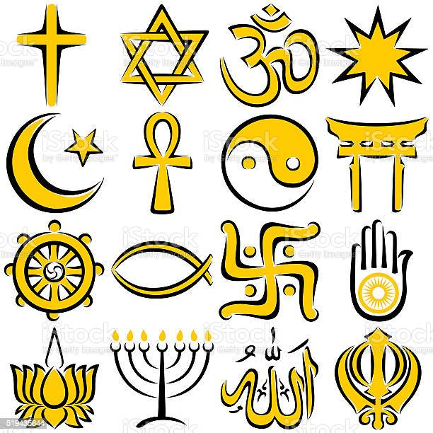

Namaste (greeting). Let's go exploring!
Indian culture is the heritage of social norms, ethical values, traditional customs, belief systems, political systems, artifacts and technologies that originated in or are associated with the Indian subcontinent. The term also applies beyond India to countries and cultures whose histories are strongly connected to India by immigration, colonization, or influence, particularly in South Asia and Southeast Asia. India's languages, religions, dance, music, architecture, food and customs differ from place to place within the country.
India is the birthplace of Hinduism, Buddhism, Jainism, Sikhism, and other religions. They are collectively known as Indian religions. Indian religions are a major form of world religions along with Abrahamic ones. Today, Hinduism and Buddhism are the world's third and fourth-largest religions respectively, with over 2 billion followers altogether, and possibly as many as 2.5 or 2.6 billion followers. 